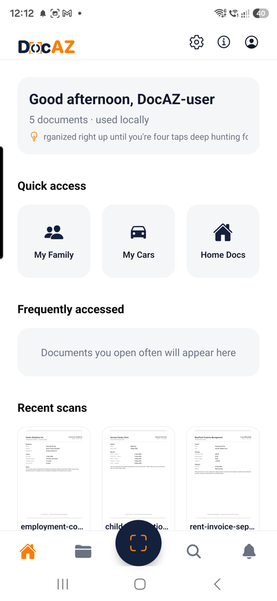
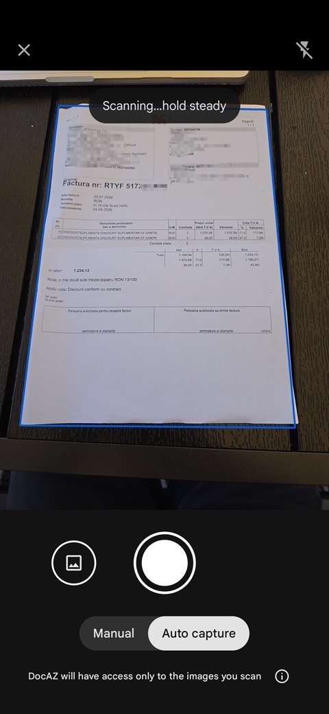
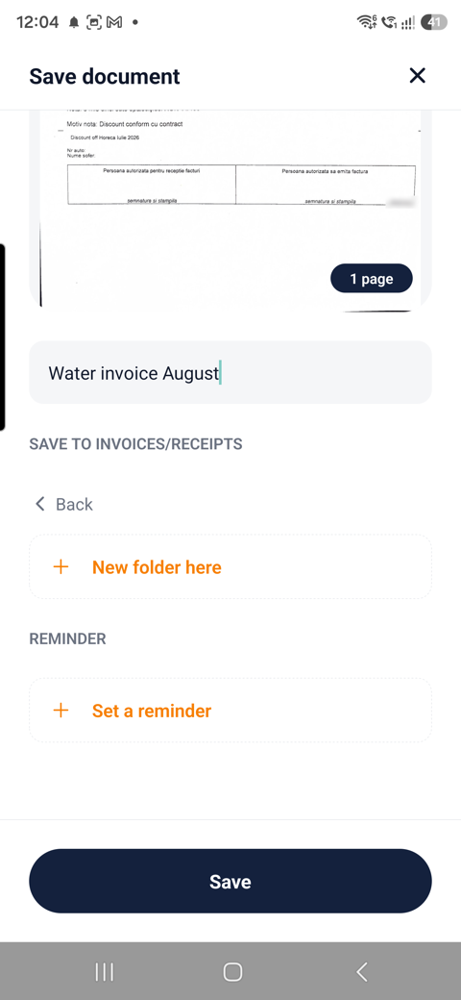
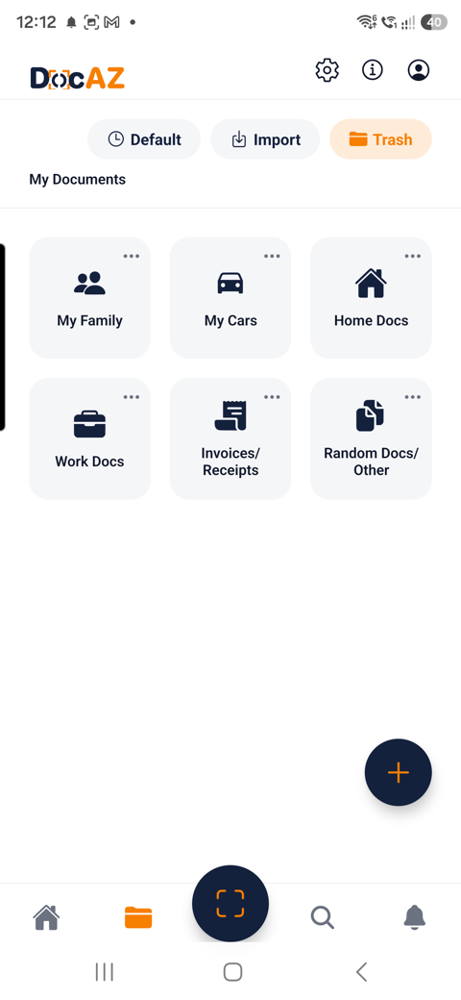
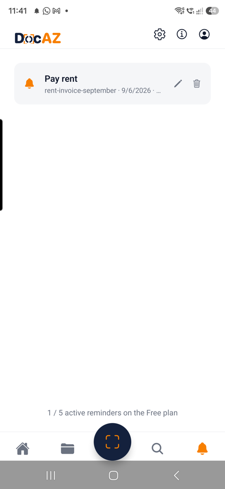

Point your camera at any paper and DocAZ scans, crops, and files it for you. Everything stays encrypted on your device - and you can find it again in seconds, even offline.
Available on Android now. iOS to follow.





Built for the documents that actually matter - IDs, contracts, receipts, medical papers - with none of the clutter.
Automatic edge detection, cropping, and deskewing. Add page after page to build one multi-page document in a single pass.
Organize up to three folder levels deep, and cut across them with color-coded tags - a document can live in one folder and wear several tags.
On-device text recognition indexes every scan the moment you save it, so Find works with zero internet connection - results after just two letters.
Set a reminder on any document right from the scan screen - an expiring ID, a bill due date - and DocAZ notifies you on time.
Already have the file - downloaded, or sent to you on WhatsApp? Bring it straight into DocAZ instead of rescanning it.
Reorganize freely as your filing system grows, or copy a document into a second folder when it genuinely belongs in both.
Hold to select several documents or folders at once, then move, copy, or delete them together.
Deleted isn't gone right away. Everything sits in Trash for 30 days with one-tap restore, in case a tap goes the wrong way.
Every scan is encrypted on your device the moment it's saved - readable only inside DocAZ, not by other apps browsing your files.
DocAZ is built around one idea: an app that holds your IDs and contracts shouldn't need the internet to work, or ask more of your data than it has to.
Scans are encrypted the moment they're saved, and only readable from inside DocAZ - not by a file manager or another app.
Scanning, organizing, and search all run entirely on your device. No connection required, no document ever has to leave your phone.
Use DocAZ completely locally, with no sign-up. An account is only needed if you choose to turn on cloud backup.
Turn on sync and your files stay encrypted in the cloud too - never stored as plain, readable files, even by us. See the Privacy Policy for the full technical detail.
One plan, one price - no confusing tiers.
Forever, no account required
or $44.99/year - save about 46%
Everything people ask before they download a document scanner app.
Open the Scan tab, point your camera at the paper, and DocAZ detects the edges and crops it automatically. Add more pages to build one multi-page PDF, then save it straight into a folder.
Yes. Scanning, organizing into folders, and searching all run entirely on your device - no Wi-Fi or mobile data needed, and no account required to use any of it.
Yes. Unlimited local scanning, storage, folders, tags, offline search, and up to 5 active reminders are free forever. Premium ($6.99/mo or $44.99/year) adds encrypted cloud backup, multi-device sync, and unlimited reminders.
Yes. DocAZ runs on-device text recognition (OCR) on every scan as soon as you save it, so Find can match words written inside the document itself, fully offline.
It goes to Trash first, not straight to permanent deletion. You have 30 days to restore it with one tap before it's removed for good.
Yes. Use Import in the Documents tab to bring in any existing PDF - from downloads, email, or WhatsApp - and DocAZ indexes it for search the same way it does a fresh scan.
Every document is encrypted on your device (AES-256) the moment it's saved, readable only from inside DocAZ. If you turn on cloud backup, it stays encrypted in the cloud too.
Not yet - DocAZ is Android-only today. iOS is on the roadmap.
DocAZ launches with the essentials. Here's what's planned after that.
Automatic document classification and key-field extraction as you scan.
Share a document via an expiring, password-protected link.
Ask a question in plain language and get an answer pulled from your own files.
DocAZ on iPhone, plus shared vaults for a household to manage documents together.
Free to start, no account required. Download it now and have your first document scanned and organized in under a minute.
Get it on Google PlayQuestions, feedback, or press inquiries - we'd love to hear from you.